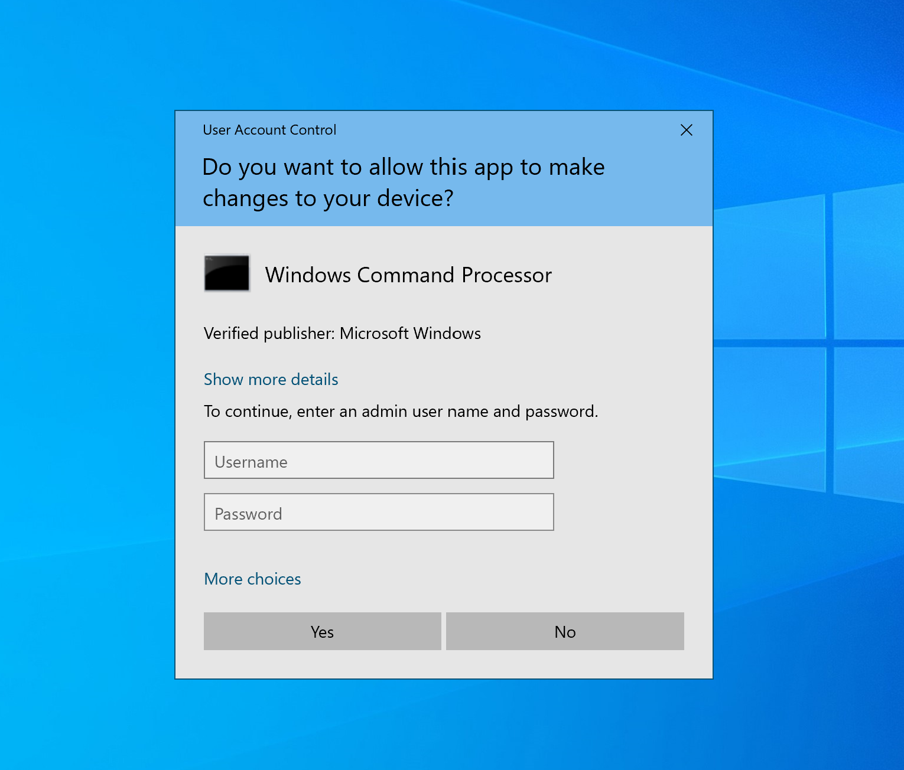

Exploits
Overview
Bamboo comes with pre-loaded exploits for users to test the evasion techniques with. Bamboo also allows users the ability to add their own exploits. These exploits are stored as files in the Bamboo Teamserver.
| Application / Service | Vulnerable Version(s) | CVE Identifier |
|---|---|---|
| Wacom Driver | 6.3.45-1 | CVE-2023-32162 |
| BarracudaDrive | 6.5 | CVE-2020-23834 |
| Wondershare Filmora | 12.2.9.2233 and below | CVE-2023-31747 |
| Wondershare Dr. Fone | 12.3.14 | CVE-2021-44596 |
| Windows Common Log File System | Windows 11 21H2, Windows 11 22H2 | CVE-2023-28252 |
| UAC Bypass | - | - |
Wacom Driver
Description
Wacom specialises in pen displays and tablets for designers. These products require the Wacom Driver to be installed. Luca Barile discovered several vulnerabilities, including one which allowed for Local Privilege Escalation (LPE). The exploit abuses various flaws in the design of the Wacom’s utilities, including especially the implementation of Remove.exe for the backup process. Full details can be found on Luca’s blog.
Implementation
Majority of the original code from Luca’s LPE exploit was kept. However, the original exploit would launch a command prompt. In Bamboo, the exploit is modified to execute the agent.exe file which will be located on the user’s desktop. This is achieved by instead injecting a Wacom command to launch the agent.exe file as shown in the code below.
Expand code
BarracudaDrive
Description
BarracudaDrive is a web-based file explorer that provides users with a convenient way to access and manage files on local machines or network-attached storage devices. This application features file sharing, file management, advanced server side scripting language and collaboration capabilities. The application’s vulnerability exploits weak and insecure folder permissions.
Implementation
The team constructed the exploit code to stop the application’s service, copy the content of Bamboo’s agent executable into C:\bd\bd.exe and start the service again after 30 seconds.
Expand code
In order to execute the Service Control (sc) utility to restart the service, administrative privileges are required. To overcome this, a manifest file was needs to be embedded into the executable.
Expand code
In the manifest file, the requestedExecutionLevel was specified as requireAdministrator. This configuration informs Windows OS that the application necessitates elevated privileges to function correctly. This manifest file is then converted into a .syso file using the rsrc tool by akavel.
| PowerShell | |
|---|---|
Lastly, build the exploit with go build . The Go compiler will detect the .syso file and embed it in the final executable.
Wondershare Filmora
Description
Filmora is a video editor by Wondershare. The specific vulnerable component is NativePush (Build 1.0.0.7), which contains an unquoted service path. The unquoted service path allows attackers to execute their own file in place of the actual service file, allowing it to be executed with SYSTEM privileges when the service is run. Running the service requires administrator privileges. The vulnerability was authored by Thurein Soe.
Implementation
The exploit for Filmora was written by the team in Golang. It creates the agent.exe file in the unquoted service path, then restarts the NativePushService, causing the agent.exe file to be executed with SYSTEM integrity context.
Expand code
Similarly to the BarracudaDrive exploit above, administrator privileges are needed to use the Service Control Utility (sc.exe) to restart the service. This means the exploit file must be run with administrative privileges. To achieve this, a manifest file (filmora.exe.manifest) must be embedded which specifies the requestExecutionLevel as requireAdministrator .
Expand code
Afterwards, the manifest file is generated into a .syso file using rsrc by akavel
| PowerShell | |
|---|---|
Finally, the exploit is built with go build . Go detects the .syso file upon compilation and embed the file into the final executable.
Wondershare Dr. Fone
Description
The vulnerability and a PoC was discovered by Peled and Cohen. Dr. Fone install additional features as modules, which uses the service InstallAssistService to actually install it. The service listens on a random UDP port defined in the file C:\ProgramData\Wondershare\ModuleUpgrade\port. The service accepts any requests to it in the right format as commands without any form of authorization or validation and executes them at up to SYSTEM privilege.
Implementation
For an exploit that runs locally, this is the process that is used:
- Locate where the agent is located (in the user desktop directory) and craft the payload to run the agent at system level.
- Read C:\ProgramData\Wondershare\ModuleUpgrade\port to identify the port number the service is running on.
- Send the payload to the service through the UDP port.
Expand code
Windows Common Log File System
Description
The Windows Common Log File System (CLFS) is a high performing, general-purpose logging system that helps applications keep track of important events and recover from failures. It was discovered that a vulnerability exists due to an out of bound read and write flaw, leading to the execution of arbitrary code. The specific Windows 11 builds affected by this vulnerability are:
The specific Windows 11 builds affected by this vulnerability are:
- Windows 11 22H1 (fixed in version 10.0.22000.1817)
- Windows 11 22H2 (fixed in version 10.0.22621.1555)
Implementation
The original PoC was developed by Fortra, a company that provides cybersecurity and automation solutions (www.fortra.com, n.d.). The execution of the original PoC requires three parameters: token offset, flag and the program to be executed. For instance, if the team wishes to elevate calc.exe to SYSTEM privileges, the command will be clfs_eop.exe 1208 1 calc.exe. Our team has modified the original PoC to automatically launch the agent executable with SYSTEM privileges. All credit goes to the original author, Fortra for discovering this vulnerability and creating the original PoC exploit.
The code snippet shown below pertains to the manage_args function within clfs_eop.cpp. The team hardcoded the values of the token offset and flag to 1208 and 1 respectively. This eliminates the need for user input to these parameters. Setting these parameters directly in the code simplifies the execution process and ensures that the program being launched always has SYSTEM privileges.
Expand code
The code snippet shown below declares a global variable within clfs_eop.cpp. The function, getCurrentUsername retrieves the current username of the user and stores it in the global variable, currentUsername. It returns true on success and false on failure. This will be used in the to_trigger function which will be exhibited in the next code snippet.
Expand code
The code snippet shown below pertains to the to_trigger function within clfs_eop.cpp. In the original code, the program it executes is notepad.exe by default. Instead of launching notepad.exe, the team modified it to launch the agent executable located in the user’s directory and the team used the global variable declared in the previous code snippet and parsed it in the %s to complete the full file path.
Expand code
The getCurrentUsername function has also been called in the first line of the main function.
Expand code
With this modification, it elevates our team’s agent executable to SYSTEM privileges when it is being launched. The CLFS exploit, both original and modified, triggers two Malware Detection Alert in Elastic. The description of the two alerts are:
- File event with process explorer.exe, parent process userinit.exe, file clfs_eop.exe
- Process event with exploit.exe, parent process cmd.exe, file clfs_eop.exe
This indicates that Elastic statically detects the exploit when it is first dropped onto the local machine’s disk and again when executed.
UAC Bypass
This is not an exploit, but is used in conjunction with certain exploits such as Filmora and BarracudaDrive.
Description
UAC is a security feature in Windows which requires applications to prompt for consent before an administrative task can be performed. This prevents malicious applications from running on your Windows device. The first image shows an example of a normal user receiving a UAC prompt, while the second image shows an example of an administrative user receiving a UAC prompt. A normal user requires an administrators login credentials while an administrative user just has a “Yes” and “No” consent box.

For more information on UAC, see this article from Microsoft.
A UAC Bypass ONLY works if the current user is in the administrators group. It allows an application to bypass the consent prompt and run with administrator privileges. There are various methods to achieve a UAC Bypass as shown by HackTricks. In Bamboo, the UAC Bypass is achieved by modifying registry keys for the Windows computerdefaults.exe utility.
Implementation
The UAC Bypass script was written by the team in Golang. The code creates 2 registry keys and launches the computerdefaults.exe process. This works because when computerdefaults.exe is launched, it looks for the registry key HKCU\Software\Classes\ms-settings\shell\open\command which by default does not exist. If the key exists, it looks for the value HKCU\Software\Classes\ms-settings\shell\open\command\DelegateExecute. If this value is found, computerdefaults.exe will look for the default value in HKCU\Software\Classes\ms-settings\shell\open\command. computerdefaults.exe follows the command found at the value in HKCU\Software\Classes\ms-settings\shell\open\command\ when it starts. Thus, the team has directed it to launch our exploit which will always be dropped as “payload.exe” in the user’s Desktop.
Expand code
Custom Exploits
Bamboo is designed to allow users to add their own exploits to the tool. Exploits can be added via the Bamboo Client. View the user guide for more details.